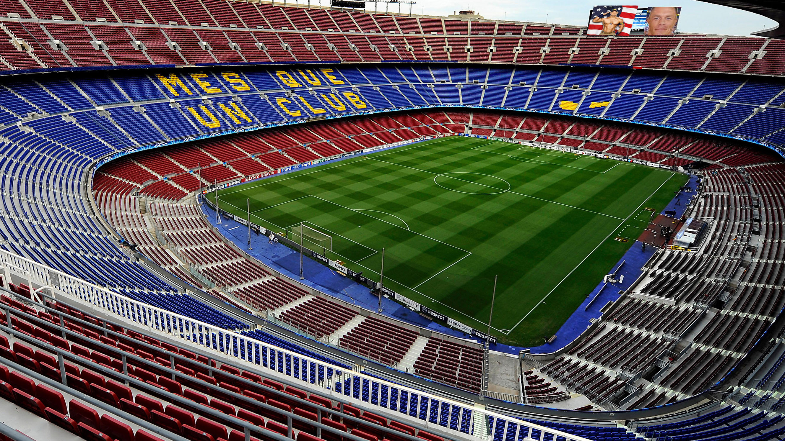

{kind=link}
History
The Early Years

FC Barcelona was founded in November 29, 1899 by a group of Swiss, English, and Catalan settlers. The club exsisted during the Spanish Civil War and the club acted as a pro-Catalan club and the players even fought up against the Spanish uprising. During this period of time the club was banned from using the Catalan flag or using non-Spanish names. Despite their troubles, the team still grew and still stands strong today.
The 20th Century

In the 40's and 50's, the team performed very well despite World War II taking place at the same time. They also finished building their current home stadium, Camp Nou, in 1957. In 1978, Josep Lluis Nunez was elected as FC Barcelona's president and has acted as the first of club elected leaders. After Nunez's reign, Johan Cruyff entered the frey. He argueably assembled one of the best teams that FC Barcelona has ever seen and was fittingly dubbed, "The Dream Team". He did this in 1988.
Recent Team History
At the start of the new century, Nunez was replaced as president by Laporta who would be in this position for 8 years. After him came Guardiola and now we have the current manager, Martinez. This was decided on May 19, 2014 after agreeing to a 2 year deal. FC finished off the most current season with a 3-0 win against Argentina in the 2015 FIFA World Cup Final.
El Clasico

There is often a fierce rivalry between the two strongest teams in a national league, and this is particularly the case in La Liga, where the game between Barcelona and Real Madrid is known as El Clasico. El Clasico has a history with these two teams spanning as far back as 1929. As a matter of fact, Barcelona and Real Madrid have faced off at every La Liga competition since its creation.